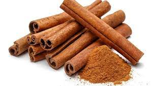
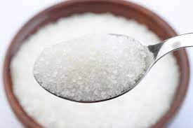
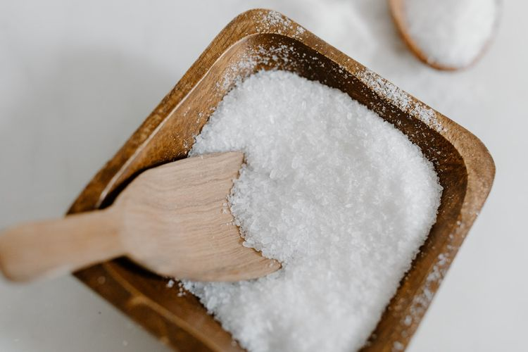
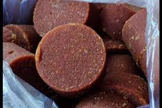

Bahan Yang Diperlukan

Dua ruas jahe

1 batang serai

kayu manis secukupnya

Air 350 ml

Garam secukupnya?

Gula merah
Cara Masak
Rebus air dan tambah kan irisan jahe, serai, gula merah, kayu manis, dan garam secukupnya
Masak air sampai matang mendidih, gula larut, dan baunya harum. jangan lupa koreksi rasa manisnya. kalau kurang manis, kamu bisa menambahkan sedikit gula pasir.
Setelah matang, matikan kompor dan tuang wedang jahe ke dalam gelas saji.
Wedang jahe siap disajikan selagi hangat.